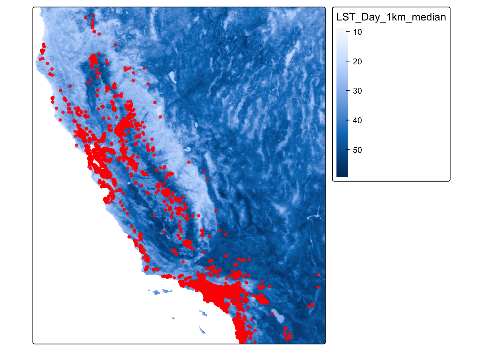
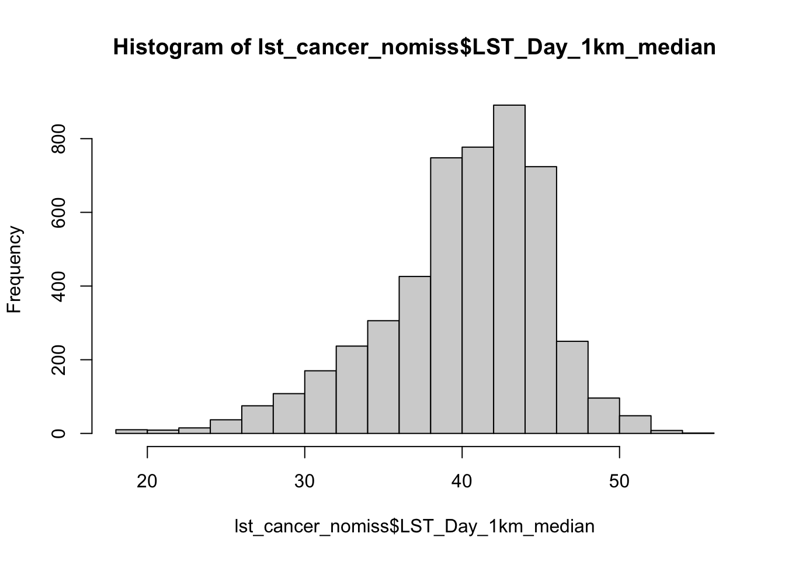

Question 1. Bring in CA data dataset
library(terra)## terra 1.8.29library(sf)## Linking to GEOS 3.13.0, GDAL 3.8.5, PROJ 9.5.1; sf_use_s2() is TRUElibrary(tmap)
library(MapGAM)## Loading required package: sp## Loading required package: gam## Loading required package: splines## Loading required package: foreach## Loaded gam 1.22-5## Loading required package: survivallibrary(tidyverse)## ── Attaching core tidyverse packages ──────────────────────── tidyverse 2.0.0 ──
## ✔ dplyr 1.1.4 ✔ readr 2.1.5
## ✔ forcats 1.0.0 ✔ stringr 1.5.1
## ✔ ggplot2 3.5.2 ✔ tibble 3.2.1
## ✔ lubridate 1.9.4 ✔ tidyr 1.3.1
## ✔ purrr 1.0.4## ── Conflicts ────────────────────────────────────────── tidyverse_conflicts() ──
## ✖ purrr::accumulate() masks foreach::accumulate()
## ✖ tidyr::extract() masks terra::extract()
## ✖ dplyr::filter() masks stats::filter()
## ✖ dplyr::lag() masks stats::lag()
## ✖ purrr::when() masks foreach::when()
## ℹ Use the conflicted package (<http://conflicted.r-lib.org/>) to force all conflicts to become errorslibrary(flextable)##
## Attaching package: 'flextable'
##
## The following object is masked from 'package:purrr':
##
## compose
##
## The following objects are masked from 'package:terra':
##
## align, colorize, rotate, widthlibrary(RColorBrewer)Load up CAdata
data(CAdata)
ca_pts <- CAdata
ca_proj <- "+proj=lcc +lat_1=40 +lat_2=41.66666666666666
+lat_0=39.33333333333334 +lon_0=-122 +x_0=2000000
+y_0=500000.0000000002 +ellps=GRS80
+datum=NAD83 +units=m +no_defs"
ca_pts <- st_as_sf(CAdata, coords=c("X","Y"), crs=ca_proj)Question 2. Read in LST data
url <- "https://github.com/pjames-ucdavis/SPH215/raw/main/LST_med_ca.tif"
download.file(url, destfile = "LST_med_ca.tif", mode = "wb")
lst_rast = rast("LST_med_ca.tif")Question 3. Check projections. Do they match?
st_crs(lst_rast)==st_crs(ca_pts)## [1] FALSEThey do not match.
Question 4. Reproject the cancer dataset to match raster
ca_transformed<-st_transform(ca_pts,st_crs(lst_rast))
st_crs(ca_transformed)==st_crs(lst_rast)## [1] TRUEQuestion 5. Make a map
lst_cancer<-tm_shape(lst_rast) +
tm_raster(col.scale = tm_scale_continuous()) +
tm_shape(ca_transformed) +
tm_dots(size=0.25, fill_alpha=0.8, fill="red")
lst_cancer
Question 6. Extract the values for LST to cancer dataset
lst_cancer_extract<-data.frame(ca_transformed,terra::extract(lst_rast,ca_transformed))
glimpse(lst_cancer_extract)## Rows: 5,000
## Columns: 7
## $ time <dbl> 1.2759763, 4.2121775, 0.2074870, 3.5099074, 10.2977…
## $ event <dbl> 1, 1, 1, 1, 0, 1, 0, 1, 1, 1, 1, 1, 0, 1, 1, 1, 1, …
## $ AGE <int> 67, 56, 67, 69, 75, 59, 62, 39, 68, 72, 78, 79, 46,…
## $ INS <fct> Mcr, Mcd, Mng, Mcr, Mng, Mcr, Oth, Uni, Uni, Uni, M…
## $ geometry <POINT [°]> POINT (-122.3492 38.3025), POINT (-118.0174 3…
## $ ID <dbl> 1, 2, 3, 4, 5, 6, 7, 8, 9, 10, 11, 12, 13, 14, 15, …
## $ LST_Day_1km_median <dbl> 36.49, 43.17, 43.43, 36.53, 38.25, 43.45, 39.49, 40…Question 7. We have 64 missing values
summary(lst_cancer_extract$LST_Day_1km_median)## Min. 1st Qu. Median Mean 3rd Qu. Max. NA's
## 18.41 37.35 40.87 40.04 43.73 54.67 64lst_cancer_nomiss <- lst_cancer_extract %>% drop_na(LST_Day_1km_median)
## Take a look at a summary of the values
summary(lst_cancer_nomiss$LST_Day_1km_median)## Min. 1st Qu. Median Mean 3rd Qu. Max.
## 18.41 37.35 40.87 40.04 43.73 54.67Question 8. Histogram
hist(lst_cancer_nomiss$LST_Day_1km_median) Question 9. Create quartiles
lst_cancer_nomiss <- lst_cancer_nomiss %>%
mutate(lst_quartile = ntile(LST_Day_1km_median, 4))
glimpse(lst_cancer_nomiss)## Rows: 4,936
## Columns: 8
## $ time <dbl> 1.2759763, 4.2121775, 0.2074870, 3.5099074, 10.2977…
## $ event <dbl> 1, 1, 1, 1, 0, 1, 0, 1, 1, 1, 1, 1, 0, 1, 1, 1, 1, …
## $ AGE <int> 67, 56, 67, 69, 75, 59, 62, 39, 68, 72, 78, 79, 46,…
## $ INS <fct> Mcr, Mcd, Mng, Mcr, Mng, Mcr, Oth, Uni, Uni, Uni, M…
## $ geometry <POINT [°]> POINT (-122.3492 38.3025), POINT (-118.0174 3…
## $ ID <dbl> 1, 2, 3, 4, 5, 6, 7, 8, 9, 10, 11, 12, 13, 14, 15, …
## $ LST_Day_1km_median <dbl> 36.49, 43.17, 43.43, 36.53, 38.25, 43.45, 39.49, 40…
## $ lst_quartile <int> 1, 3, 3, 1, 2, 3, 2, 2, 1, 2, 1, 4, 1, 2, 2, 4, 2, …table(lst_cancer_nomiss$lst_quartile)##
## 1 2 3 4
## 1234 1234 1234 1234Question 10. Create table of quartiles by event
## Create a contingency table of event by walk_quartile
tab <- table(lst_cancer_nomiss$lst_quartile, lst_cancer_nomiss$event)
tab##
## 0 1
## 1 531 703
## 2 498 736
## 3 450 784
## 4 466 768## Convert to percentages by column
tab_col_perc <- prop.table(tab, margin = 2) * 100
round(tab_col_perc, 1)##
## 0 1
## 1 27.3 23.5
## 2 25.6 24.6
## 3 23.1 26.2
## 4 24.0 25.7Question 11. Run chi square
chisq.test(tab)##
## Pearson's Chi-squared test
##
## data: tab
## X-squared = 13.117, df = 3, p-value = 0.004391